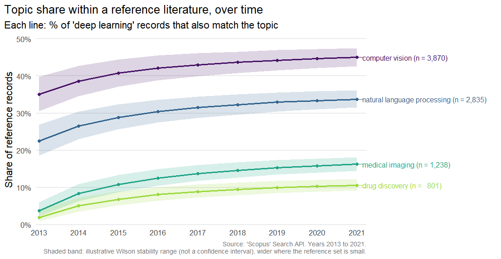

scopusflow is a reproducible, quota-aware workflow layer over the Elsevier Scopus Search API. It turns one-off bibliographic queries into inspectable plans, retrieves records safely with pagination, rate-limit handling, retry with back-off and optional resumable caching, normalises them to a stable tidy schema, tracks changes in DOI sets over time, sizes sets of concepts and their intersections and compares publication trends across topics.
This is the feature-parity twin of the Python package of the same name, which offers the same workflow on top of pybliometrics.

Scopus is a trademark of Elsevier. scopusflow is an independent client and is not affiliated with or endorsed by Elsevier. You will need your own Elsevier API key and should use it under Elsevier’s API terms.
Installation
# install.packages("pak")
pak::pak("pablobernabeu/scopusflow")API key
scopusflow never stores your key. It is read, in order, from the api_key argument, the scopusflow.api_key option, or the SCOPUS_API_KEY environment variable. Store it in ~/.Renviron:
SCOPUS_API_KEY=your-key-here
# Optional, for off-campus access to subscriber content:
SCOPUS_INST_TOKEN=your-institutional-token
library(scopusflow)
scopus_has_key()
#> [1] TRUEThe workflow in brief
With a key configured, a search runs as a plan: compose the query, size it, execute it with caching, then export or analyse the result. These calls contact the API and consume quota, so they are not run here:
# Compose a field-tagged query, then a reproducible plan partitioned by
# year to stay under the API's start < 5000 ceiling.
q <- scopus_query("perovskite", "solar cell", .field = "TITLE-ABS-KEY")
plan <- scopus_plan(q, years = 2012:2022, partition = "year")
# Size the search before spending quota, then execute, caching each year
# so an interrupted run can resume.
scopus_count(q, years = 2012:2022)
records <- scopus_fetch_plan(plan, cache_dir = scopus_cache_dir(), resume = TRUE)
# Save a clean DOI list, or export the records for a reference manager
# (Zotero, EndNote, Mendeley) or a LaTeX bibliography.
scopus_extract_dois(records, file = file.path(tempdir(), "dois.csv"))
as_bibtex(records, file = file.path(tempdir(), "records.bib"))The Get started vignette walks this workflow offline, on records bundled with the package, and the articles each cover one part in depth: designing queries, search plans and quota, building a reference set, analysing and visualising a literature (trends, top sources and authors, concept intersections, abstracts and cursor-paged harvests), author keywords and references, comparing topics over time (the chart above) and tracking how a literature changes between retrievals.
Code-free app
run_app() opens a local Shiny app that drives the whole workflow without writing code, and mirrors every choice back as a runnable R script, so it works as an on-ramp to the package rather than a replacement. It runs on your own machine, so your API key never leaves it, and a demo mode lets you try the flow with synthetic data and no key.
run_app()The retrieval runs in a background process with a live progress terminal, and records appear as a table and as plots with one-click export. It needs the suggested packages shiny, bslib and callr. The Using the code-free app article walks through every panel.
Quotas, rate limits and errors
The Scopus API enforces a weekly quota and a short-term rate limit, and ordinary offset paging returns at most the first 5000 records of any query (use scopus_fetch(cursor = TRUE) to go beyond that). scopusflow works within these limits rather than around them. It requests the largest page each view allows, 200 records for STANDARD and 25 for COMPLETE, so that a retrieval uses as few requests, and as little quota, as it can. This is the same approach rscopus takes. The quota and rate-limit headers are parsed by scopus_quota(), transient failures such as HTTP 429 and the 5xx range are retried with back-off that honours Retry-After, and an offset-paged query is capped at 5000 records with a warning that suggests cursor paging or partitioning by year. A failure arrives as a typed condition (every scopus_error_* condition inherits from scopus_error), so a workflow can respond to it in code. The Get started vignette shows the tryCatch() pattern.
How it compares
| Package | Focus | Relationship to scopusflow |
|---|---|---|
rscopus |
Low-level Scopus API wrapper | scopusflow sits at a higher workflow layer (plans, quotas, caching, diffs) and calls the API directly through httr2
|
openalexR, pubmedR, dimensionsR, rcrossref
|
Other bibliographic databases | Complementary, covering different sources |
bibliometrix |
Science mapping and analysis | Downstream, and fed by as_bibliometrix()
|
Limitations
A few limits are worth keeping in mind. Under ordinary offset paging the Scopus Search API returns at most the first 5000 records of a query, so a large search is best partitioned by year with scopus_plan() or harvested in one pass with scopus_fetch(cursor = TRUE), which trades relevance order for completeness. as_bibliometrix() maps the core descriptive fields the Search API returns; structured reference lists are available through scopus_abstract(include = "references") and scopus_corpus(), but an analysis that needs full affiliations, or bibliometrix’s own cited-reference (CR) field, will still call for a complete Scopus export. What you can retrieve also depends on your Elsevier entitlement, and some fields are available only in the COMPLETE view and to subscribers.
Citation
citation("scopusflow")The About page carries the same citation with a BibTeX entry, and a short note on the developer.
Licence
MIT. ‘Scopus’ is a trademark of Elsevier. This package is an independent client and is not affiliated with or endorsed by Elsevier.
Contributing
Issues and pull requests are welcome. The contributing guide describes the development setup and the conventions the package follows, and everyone taking part is asked to honour the Code of Conduct.
Alongside the per-commit checks on Windows, macOS and several versions of R, a scheduled job re-checks the package every other day against the current and development versions of its dependencies, so that breakage from an upstream change is caught early. The contributing guide describes how it reports, and tries to resolve, any problem it finds.